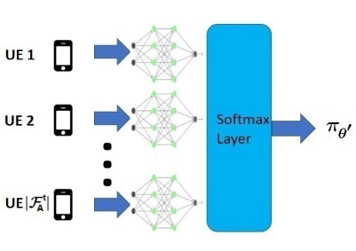
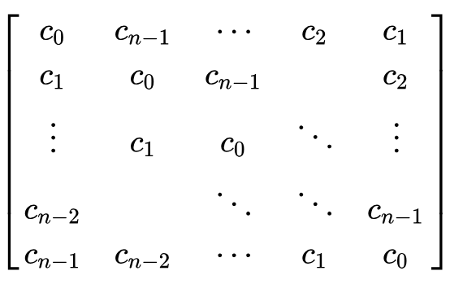
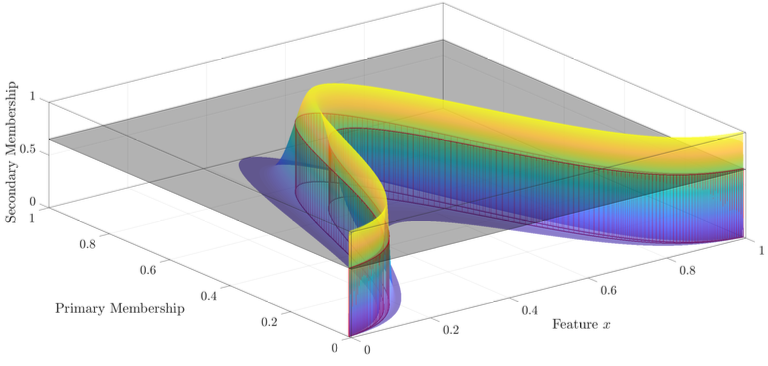
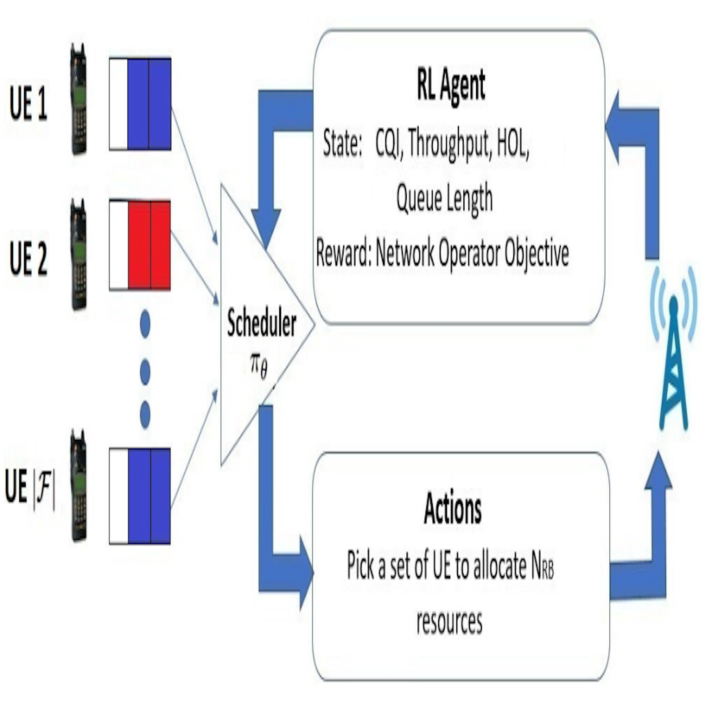
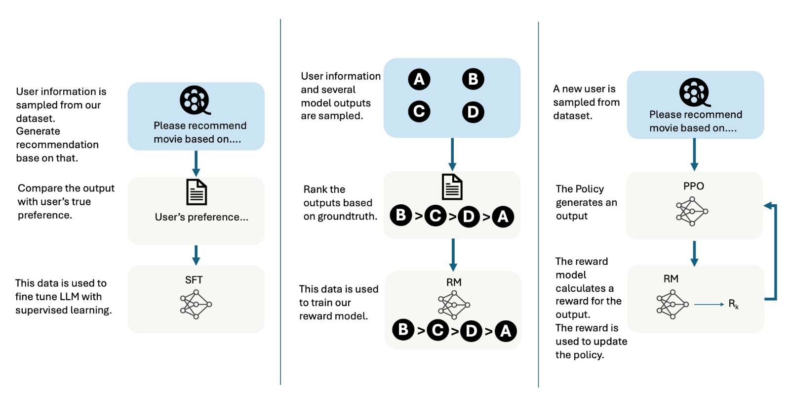
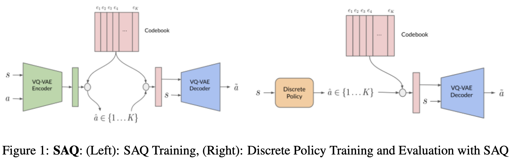
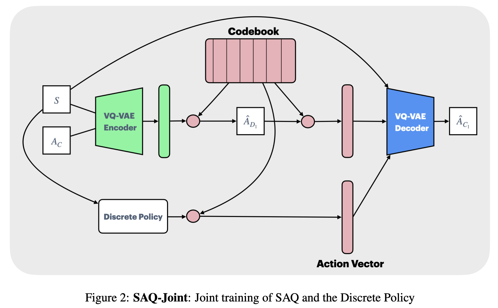
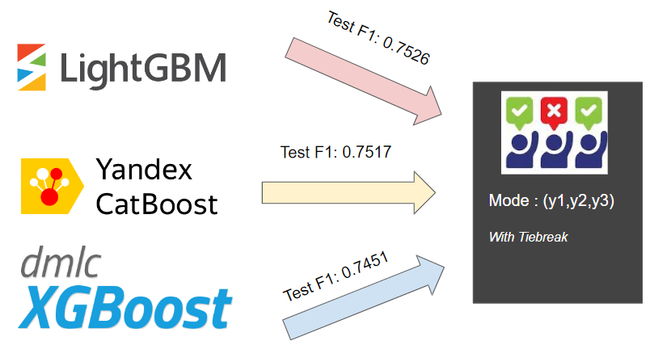
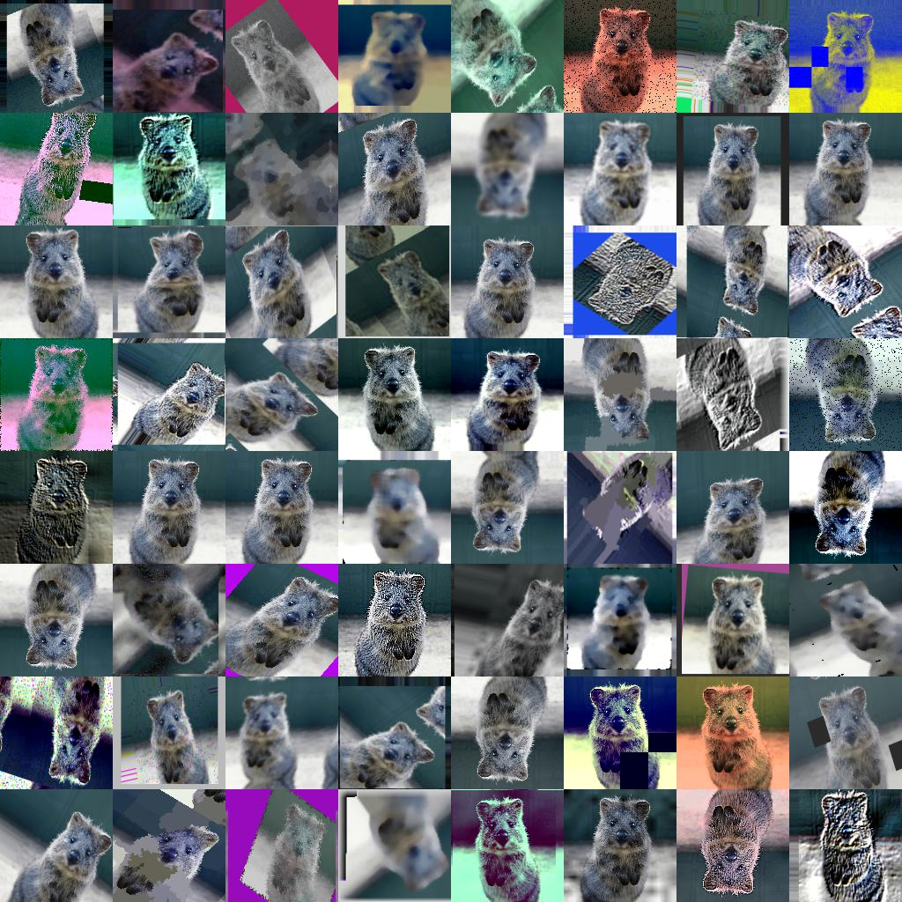

Research Summary
I am passionate about addressing problems that have a direct and meaningful impact on our community. My work has been dedicated to understanding the nature of these challenges and exploring solutions rooted in machine learning, probability, optimization, and simulation.
Interests: Reinforcement Learning, Imitation Learning, Generative AI, Behavior Foundation Models, Large Language Models.
Publications
-

Abstract: Imitation Learning (IL) has proven highly effective for robotic and control tasks where manually designing reward functions or explicit controllers is infeasible. However, standard IL methods implicitly assume that the environment dynamics remain fixed between training and deployment. In practice, this assumption rarely holds where modeling inaccuracies, real-world parameter variations, and adversarial perturbations can all induce shifts in transition dynamics, leading to severe performance degradation. We address this challenge through Balance Equationbased Distributionally Robust Offline Imitation Learning, a framework that learns robust policies solely from expert demonstrations collected under nominal dynamics, without requiring further environment interaction. We formulate the problem as a distributionally robust optimization over an uncertainty set of transition models, seeking a policy that minimizes the imitation loss under the worst-case transition distribution. Importantly, we show that this robust objective can be reformulated entirely in terms of the nominal data distribution, enabling tractable offline learning. Empirical evaluations on continuous-control benchmarks demonstrate that our approach achieves superior robustness and generalization compared to state-of-the-art offline IL baselines, particularly under perturbed or shifted environments.
-
Abstract: Imitation learning (IL) is notably effective for robotic tasks where directly programming behaviors or defining optimal control costs is challenging. In this work, we address a scenario where the imitator relies solely on observed behavior and cannot make environmental interactions during learning. It does not have additional supplementary datasets beyond the expert’s dataset nor any information about the transition dynamics. Unlike state-of-the-art (SOTA) IL methods, this approach tackles the limitations of conventional IL by operating in a more constrained and realistic setting. Our method uses the Markov balance equation and introduces a novel conditional density estimation-based imitation learning framework. It employs conditional normalizing flows for transition dynamics estimation and aims at satisfying a balance equation for the environment. Through a series of numerical experiments on Classic Control and MuJoCo environments, we demonstrate consistently superior empirical performance compared to many SOTA IL algorithms.
-
Abstract: Imitation Learning (IL) is an important paradigm within the broader reinforcement learning (RL) methodology. Unlike most of RL, it does not assume availability of rewardfeedback. Reward inference and shaping are known to be difficult and error-prone methods particularly when the demonstration data comes from human experts. Classical methods such as behavioral cloning and inverse reinforcement learning are highly sensitive to estimation errors, a problem that is particularly acute in continuous state space problems. Meanwhile, state-of-the-art IL algorithms convert behavioral policy learning problems into distribution-matching problems which often require additional online interaction data to be effective. In this paper, we consider the problem of imitation learning in continuous state space environments based solely on observed behavior, without access to transition dynamics information, reward structure, or, most importantly, any additional interactions with the environment. Our approach is based on the Markov balance equation and introduces a novel conditional kernel density estimation-based imitation learning framework. It involves estimating the environment’s transition dynamics using conditional kernel density estimators and seeks to satisfy the probabilistic balance equations for the environment. We establish that our estimators satisfy basic asymptotic consistency requirements. Through a series of numerical experiments on continuous state benchmark environments, we show consistently superior empirical performance over many state-of-the-art IL algorithms.
-
Abstract: Imitation Learning (IL) offers a compelling framework within the broader context of Reinforcement Learning (RL) by eliminating the need for explicit reward feedback, a common requirement in RL. In this work, we address IL based solely on observed behavior without access to transition dynamics information, reward structure, or, most importantly, any additional interactions with the environment. Our approach leverages conditional kernel density estimation and performs policy optimization to ensure the satisfaction of the Markov balance equation associated with the environment. This method performs effectively in discrete and continuous state environments, providing a novel solution to IL problems under strictly offline optimization settings. We establish that our estimators satisfy basic asymptotic consistency requirements. Through a series of numerical experiments on continuous state benchmark environments, we show consistently superior empirical performance over many state-of-the-art IL algorithms.
-

Abstract: In cellular communication systems, radio resources are allocated to users by the MAC scheduler, that typically runs at the base station (BS). The task of the scheduler is to meet the quality of service (QoS) requirements of each data flow while maximizing the system throughput and achieving a desired level of fairness amongst users. Traditional schedulers use handcrafted metrics and are meticulously tuned to achieve a delicate balance between multiple, often conflicting objectives. Diverse QoS requirements of 5G networks further complicate traditional schedulers. In this paper, we propose a novel reinforcement learning based scheduler that learns an allocation policy to simultaneously optimize multiple objectives. Our approach allows network operators to customize their requirements, by assigning priority values to QoS classes. In addition, we adopt a flexible neural-network architecture that can easily adapt to varying number of flows, drastically simplifying training, thus rendering it viable for practical implementation in constrained systems. We demonstrate, via simulations, that our algorithm outperforms conventional heuristics such as M-LWDF, EXP-RULE and LOGRULE and is robust to changes in radio environment and traffic patterns.
-

Abstract: An efficient data augmentation algorithm generates samples that improves accuracy and robustness of training models. Augmentation with informative samples imparts meaning to the augmented data set. In this paper, we propose CoPASample (Covariance Preserving Algorithm for generating Samples), a data augmentation algorithm that generates samples which reflects the first and second order statistical information of the data set, thereby augmenting the data set in a manner that preserves the total covariance of the data. To address the issue of exponential computations in the generation of points for augmentation, we formulate an optimisation problem motivated by the approach used in -SVR to iteratively compute a heuristics based optimal set of points for augmentation in polynomial time. Experimental results for several data sets and comparisons with other data augmentation algorithms validate the potential of our proposed algorithm.
-

Abstract: Type-2 fuzzy sets (T2 FSs) are capable of handling uncertainty more efficiently than type-1 fuzzy sets (T1 FSs). The fuzzifier parameter plays an important role in the final cluster partitions in fuzzy c-means (FCM), interval type-2 (IT2) FCM, general type-2 (GT2) FCM, and other fuzzy clustering algorithms. In general, fuzzifiers are chosen for a given dataset based on experience. In this paper, we adaptively compute suitable values for the range of the fuzzifier parameter for each α-plane of GT2 FSs for a given data set. The footprint of uncertainty (FOU) for each α-plane is obtained from the given data set using histogram based membership generation. This is iteratively processed to give the converged values of fuzzifier parameters for each α-plane of GT2 FSs. Experimental results for several data sets are given to validate the effectiveness of our proposed method.
Patents
-

Abstract: The present disclosure provides a method for radio-resource scheduling in a telecommunication network. The method comprises selecting at least one objective associated with a radio-resource scheduling from a plurality of objectives; prioritizing at least one flow from a plurality of flows for the selected at least one objective; identifying at least one state parameter from a plurality of state parameters associated with at least one of an active bearers from a plurality of active bearers; inputting at least one of the plurality of state parameters for the at least one of the active bearers to be scheduled during a current transmission time interval (TTI) to a reinforcement machine learning (ML) network, the reinforcement ML network being configured for a reward in accordance with the selected at least one objective; and receiving, from the reinforcement ML network, a radio resource allocation for each of the active bearers for the current TTI.
Projects
-

Abstract: Multimodal learning has gained significant attention for its applications in critical areas such as computer vision, robotics, healthcare diagnostics, and human-computer interaction, where the ability to synthesize multiple modalities can significantly improve predictive accuracy and system robustness. However, real-world multimodal datasets are often incomplete, leading to degraded performance in predictive tasks. In this work, we propose a diffusion-based modality restoration framework that conditions a trained diffusion model on available modalities to reconstruct the missing one. We extract emotion-rich features from text, video and audio and explore various fusion strategies (early, late, and model-level transformer based fusion) to integrate reconstructed modalities for improved downstream personality trait inference. We evaluate our approach on the ChaLearn First Impressions V2 dataset.

-
Abstract: This study explores the optimization of recommendation systems with Large Language Models (LLMs) using two distinct methodologies: Reinforcement Learning from Human Feedback (RLHF) and Direct Preference Optimization (DPO). Separate pipelines were developed to fine-tune LLMs for inferred user preferences. Using MovieLens datasets, we show that supervised fine-tuning (SFT) and preference tuning improve LLM-based recommendations. These results highlight the potential and limitations of LLM-based systems for recommendation tasks.

-
Abstract: The field of offline reinforcement learning (RL) offers a versatile framework for transforming fixed behavior datasets into policies that have the potential to surpass the performance of the original data-collecting policy. Despite significant advancements like adding conservatism and policy constraints to address distributional shifts, continuous action settings often pose challenges that necessitate approximations. In contrast, discrete action settings offer more precise or even exact computations for offline RL constraints and regularizers, presenting fewer hurdles. Our project begins with an exploration of an adaptive method for action quantization. Utilizing a VQ-VAE, we acquire knowledge in state-conditioned action quantization to address the exponential complexity inherent in naive action space discretization. Through experimentation, we reproduce that integrating this discretization technique strengthens the effectiveness of well-known offline RL approaches such as IQL and CQL on standardized tasks. We subsequently refine this methodology through joint training of VQ-VAE and offline RL methods, resulting in further performance enhancements compared to previous methodology.


-

Abstract: Predicting the damage caused by an earthquake is a challenging task. Given an extensive dataset comprised of aspects of building location and construction, we predict the damage level caused to buildings. The data is from the 2015 Gorkha earthquake in Nepal. We make use of feature engineering techniques, gradient boosting algorithms and ensemble models to develop our machine learning model, which achieved an F1 score of 0.7541 on test data.

-

Abstract: An efficient data augmentation algorithm generates samples that improves accuracy and robustness of training models. Augmentation with informative samples imparts meaning to the augmented data set. In this paper, we propose CoPASample (Covariance Preserving Algorithm for generating Samples), a data augmentation algorithm that generates samples which reflects the first and second order statistical information of the data set, thereby augmenting the data set in a manner that pre- serves the total covariance of the data. To address the issue of exponential computations in the generation of points for augmentation, we formu- late an optimisation problem motivated by the approach used in ν-SVR to iteratively compute a heuristics based optimal set of points for aug- mentation in polynomial time. Experimental results for several data sets and comparisons with other data augmentation algorithms validate the potential of our proposed algorithm.